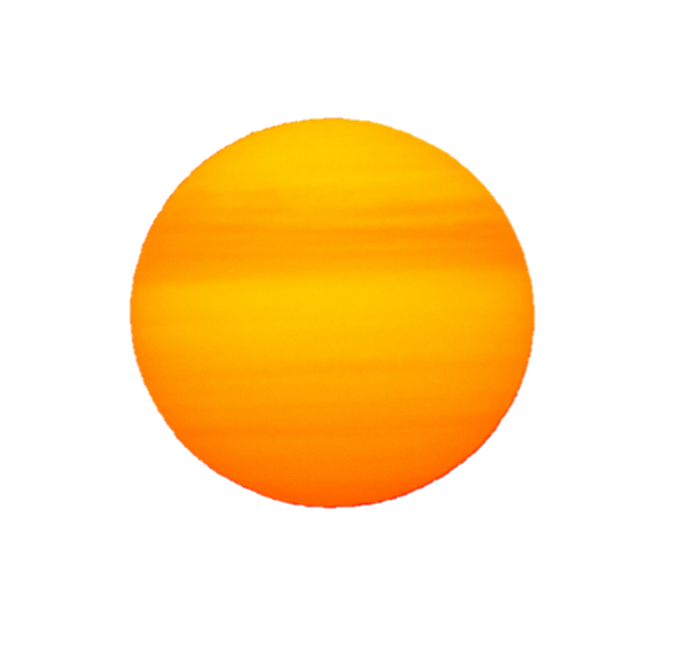
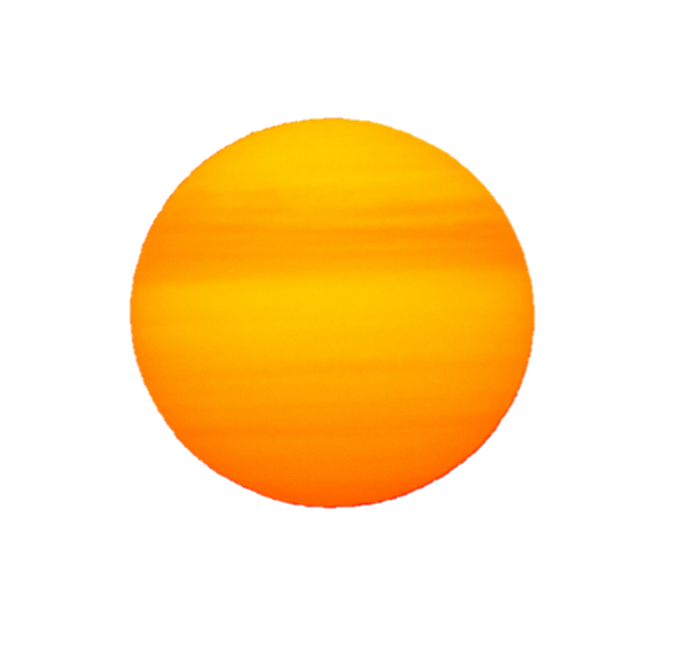
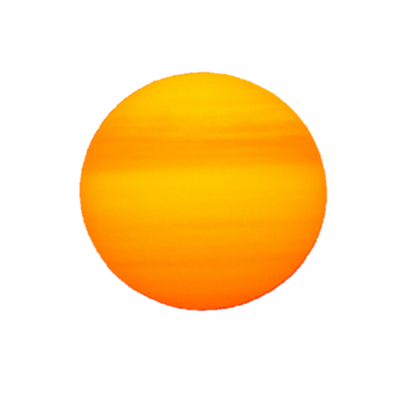
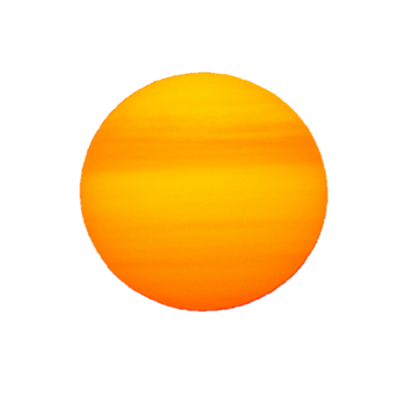

 

Nature gifts many benefits to humans. From the air we breathe,
the water we drink, and the food we eat, nature enhances our
wellbeing and freely provides the essentials for our survival.
For decades, scientists and environmentalists have discussed the
concept of ECOSYSTEM SERVICES. However, it wasn’t until the early 2000s
that it became more common place. From 2001-2005, the Millennium Ecosystem
Assessment (MA) embarked on a study to determine the impact on
humans should ecosystems continue to change.
Drawing on the knowledge of over 1,000 experts from across the globe,
they evaluated “the condition and trends in the world’s ecosystems
and the services they provide,” according to the MA website.
They also identified evidence-based science to determine the best
methods for conservation, enhancement, and sustainable use of
ecosystems.
While the concept of ecosystem services is commonly understood
within the science and environmentalist community, one study found
that it’s not necessarily common knowledge amongst the public.
That’s why we’ve put together some basic explanations and examples
below.
Supporting services are the foundation of ecosystems. These natural processes keep them functioning and healthy. Supporting services include photosynthesis, the creation of soil, nutrient cycling, and pollination, among many others. They basically make it possible for all life to exist and thrive.
Provisioning services are basically anything that can be extracted from nature. The first thing people tend to think of is food. Fruits, vegetables, nuts, livestock, fish, and seafood are all direct products of ecosystems, according to the National Wildlife Federation (NWF). Beyond food, provisioning services include drinking water, plants that can be transformed into clothing and medicine, raw materials like timber and minerals, and other materials that can be converted into energy.
Regulating services moderate natural occurrences in ecosystems. They also ensure ecosystems continue to function in sustainable and resilient ways. For example, plants clean and filter water and also help regulate air quality. Bees pollinate flowers, bacteria help decompose waste, while ladybugs help control pest populations (think aphids). Tree roots even prevent erosion as they hold soil in place.